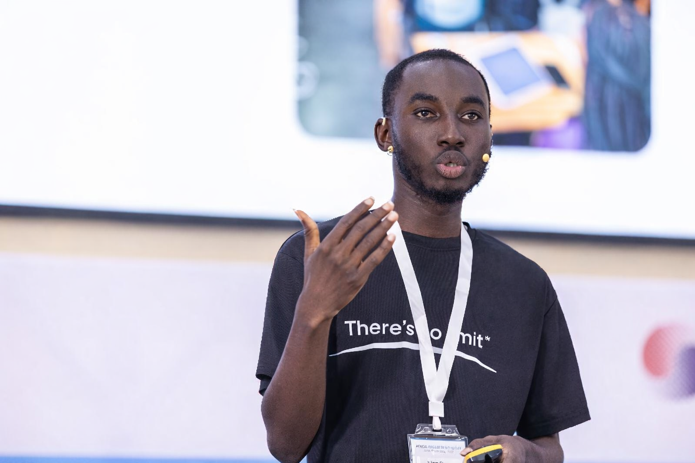
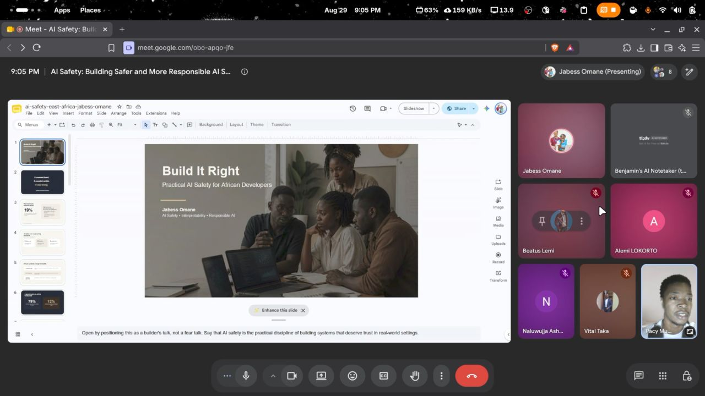

Understanding AI.
Questioning its decisions.
I study how AI systems make decisions, how people interact with them, and how technology shapes institutions and economies. My technical work focuses on explainability and algorithmic recourse.
Explore my research ↓
Jabess Omane / Accra, GhanaWhat does an explanation
actually help us understand?
I am interested in the gap between an explanation that looks convincing and one that helps someone assess a decision.
My research connects responsible AI with human–computer interaction, tech and AI policy, and economics. I am interested in how technology changes access, productivity, and opportunity, particularly in African economies.
I hold a First Class BTech in Mechatronics Engineering from Koforidua Technical University and work as an AI Research Engineer at Mingo Blox.
Training in machine learning for public policy and agent-based modelling at UNU-MERIT / Maastricht University informs how I approach the interaction between individual decisions, institutions, and wider social outcomes.
Background & training ↗From prediction
to understanding.
Prototypes that explore explanations, available actions, and the assumptions behind them.
DecisionLens
Investigating counterfactual recourse in graduate admissions: what changes a prediction, and how do our assumptions affect that advice?
Ghanaian Sign Language interaction
Contributed to a bidirectional sign-language AI project, connecting deaf and hard-of-hearing communities with software, AI, and design teams. My role included technical coordination, data-card preparation, and development contributions.
Beyond the model.
Personal perspectives on AI safety, institutions, and technology in society.
01The AI Safety Problem Is Not Technical. It’s Institutional.
Why alignment is primarily a crisis of human coordination, institutional design, and regulatory capture rather than a mathematical or algorithmic bottleneck.
The African Algorithmic Accountability Imperative
Exploring why Western-centric algorithmic fairness audits fail in emerging economies, and the urgent necessity of explainability, native dialect representation, and actionable recourse.
Electoral Integrity in the Age of Generative Disinformation
Analyzing how multi-dialect deepfakes and rapid-fire social streams challenge traditional trust structures, and how real-time NLP pipelines safeguard democratic processes.
AI safety, with
an African perspective.
PyTorch Community East Africa · 29 August 2026
I spoke about interpretability, fairness, reliability, alignment, and responsible deployment, and the role African developers and communities can play in shaping safer AI.
Read the community recap ↗
Let’s ask better
questions together.
I am seeking fully funded research master’s and PhD opportunities in responsible AI, explainability, human–computer interaction, and the policy and economic implications of technology.
Bring a question.
Challenge an assumption.
A research idea, a counterargument, a paper worth reading, or a possibility for collaboration. Unfinished thoughts are welcome.
What should we
think about next?
Your idea goes to my email, not a public comment feed. The button opens a draft in your email app; you review and send it.